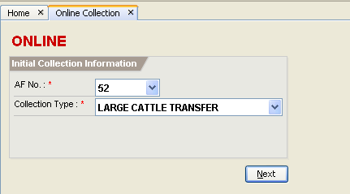

Collection Transaction
This facility enables you to issue receipts such as AF51, AF52, AF53, AF54, AF56, AF57, AF58, and Cash Tickets.
There are three types of collection mode in the system. These are the online collection, offline collection,
and capture collection. Online Collection facility is used during the actual time of collection.
In this facility, transaction date is generated by the system. Offline Collection and Capture Collection
facilities are used to capture collections that are transacted manually. In this facilities, collectors can
be able to specify the transaction date. Online Collection and Offline Collection facilities are used by
collectors while Capture Collection facility is used by sub collectors.
How to issue AF51 receipt? (Online Collection)
1. On the menu toolbar, go to "Tax Collection -> Online Collection" item. You can also click on the "Online Collection"
icon from the home page.
2. Select AF No. 51 and its collection type, and click on the "Next" button to proceed.
3. Specify the Paid By , Address, and Income Account(s). To search for the income accounts, type atleast first three
letters of the word, and press [Enter].
4. Select an income account from the list, and click on the "OK" button or press [Enter].
5. Press [Enter] twice to move the cursor to the next line. This action must be done to get the correct amount due.

6. If the payment type is cash, click on the "F9 - Cash" button or press [F9]. Specify the cash tendered,
and click on the "OK" button or press [Enter].
If the payment type is check, click on the "F10 - Check" button or press [F10]. Specify the check
information (bank, check number, check date, amount), and click on the "OK" button or press [Enter].
7. Click on the "Save" button to save the collection.
8. Click on the "OK" button to print the receipt.
How to issue AF52 receipt? (Online Collection)
1. On the menu toolbar, go to "Tax Collection -> Online Collection" item. You can also click on the "Online Collection"
icon from the home page. (Please refer to Issuing AF51 Receipt - Step 1)
2. Select AF No. 52 and its collection type, and click on the "Next" button to proceed.

3. Fill in the Paid By, Address, and Transfer of Large Cattle information.
4. Click on the "Save" button to save the collection.
5. Click on the "OK" button to print the receipt.
How to issue AF53 receipt? (Online Collection)
1. On the menu toolbar, go to "Tax Collection -> Online Collection" item. You can also click on the "Online Collection"
icon from the home page. (Please refer to Issuing AF51 Receipt - Step 1)
2. Select AF No. 53 and its collection type, and click on the "Next" button to proceed.
3. Fill in the Paid By, Address, and Ownership of Large Cattle information.
4. Click on the "Save" button to save the collection.
5. Click on the "OK" button to print the receipt.
How to issue AF54 receipt? (Online Collection)
1. On the menu toolbar, go to "Tax Collection -> Online Collection" item. You can also click on the "Online Collection"
icon from the home page. (Please refer to Issuing AF51 Receipt - Step 1)
2. Select AF No. 54 and its collection type, and click on the "Next" button to proceed.
3. Fill in the Paid By, Address, and Marriage License and Fee information.
4. Click on the "Save" button to save the collection.
5. Click on the "OK" button to print the receipt.
How to issue AF56 receipt - Real Property (No Ledger)? (Online Collection)
1. On the menu toolbar, go to "Tax Collection -> Online Collection" item. You can also click on the "Online Collection"
icon from the home page. (Please refer to Issuing AF51 Receipt - Step 1)
2. Select AF No. 56 and Collection Type - REAL PROPERTY (NO LEDGER), and click on the "Next" button to proceed.
3. Fill in the Paid By and Address, and click on the "Add" button or press [Alt+A].
4. Fill in the Manual Collection information, and click on the "Compute" button or press [Alt+M] to compute the BASIC and SEF amounts.
5. Click on the "OK" button or press [Enter].
6. If the payment type is cash, click on the "F9 - Cash" button or press [F9]. Specify the cash tendered,
and click on the "OK" button or press [Enter].
If the payment type is check, click on the "F10 - Check" button or press [F10]. Specify the check
information (bank, check number, check date, amount), and click on the "OK" button or press [Enter].
7. Click on the "Save" button to save the collection.
8. Click on the "OK" button to print the receipt.
How to issue AF57 receipt? (Online Collection)
1. On the menu toolbar, go to "Tax Collection -> Online Collection" item. You can also click on the "Online Collection"
icon from the home page. (Please refer to Issuing AF51 Receipt - Step 1)
2. Select AF No. 57 and its collection type, and click on the "Next" button to proceed.
3. Fill in the Paid By, Address, and Slaughter Permit information.
4. If the payment type is cash, click on the "F9 - Cash" button or press [F9]. Specify the cash tendered,
and click on the "OK" button or press [Enter].
If the payment type is check, click on the "F10 - Check" button or press [F10]. Specify the check
information (bank, check number, check date, amount), and click on the "OK" button or press [Enter].
5. Click on the "Save" button to save the collection.
6. Click on the "OK" button to print the receipt.
How to issue AF58 receipt? (Online Collection)
1. On the menu toolbar, go to "Tax Collection -> Online Collection" item. You can also click on the "Online Collection"
icon from the home page. (Please refer to Issuing AF51 Receipt - Step 1)
2. Select AF No. 58 and its collection type, and click on the "Next" button to proceed.
3. Fill in the Paid By, Address, and Burial Permit and License Fee information.
4. Click on the "Save" button to save the collection.
5. Click on the "OK" button to print the receipt.
How to issue cash ticket? (Online Collection)
1. On the menu toolbar, go to "Tax Collection -> Online Collection" item. You can also click on the "Online Collection"
icon from the home page. (Please refer to Issuing AF51 Receipt - Step 1)
2. Select AF No. for cash ticket and its collection type, and click on the "Next" button to proceed.
3. Fill in the Paid By, Address, and Quantity Issued. Specify the income account and its amount.
4. If the payment type is cash, click on the "F9 - Cash" button or press [F9]. Specify the cash tendered,
and click on the "OK" button or press [Enter].
If the payment type is check, click on the "F10 - Check" button or press [F10]. Specify the check
information (bank, check number, check date, amount), and click on the "OK" button or press [Enter].
5. Click on the "Save" button to save the collection.
How to transact Offline Collection?
When using the Offline Collection facility, the accountable form to be used must be in offline mode.
On the menu toolbar, go to "Tax Collection -> Offline Collection" item. You can also click on the "Offline Collection"
icon from the home page to open the Offline Collection page. (Please refer to the Online Collection for the
procedures of issuing a receipt)
How to transact Capture Collection?
When using the Capture Collection facility, the accountable form to be used must be in capture mode.
On the menu toolbar, go to "Tax Collection -> Capture Collection" item. You can also click on the "Capture Collection"
icon from the home page to open the Capture Collection page. (Please refer to the Online Collection for the
procedures of issuing a receipt)